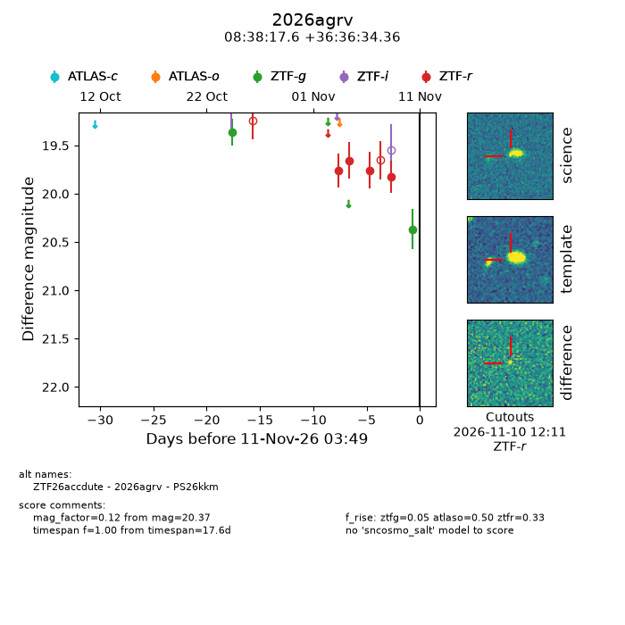
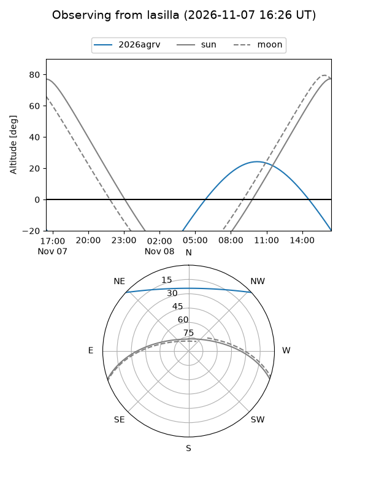
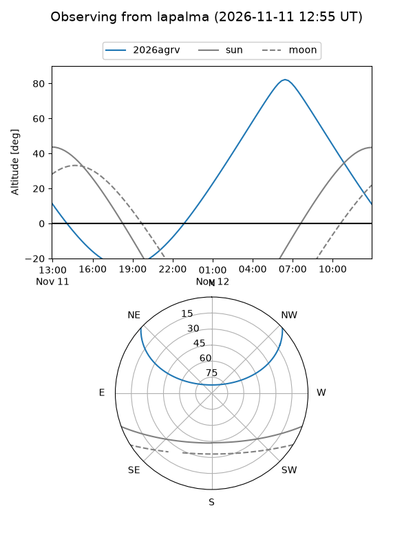
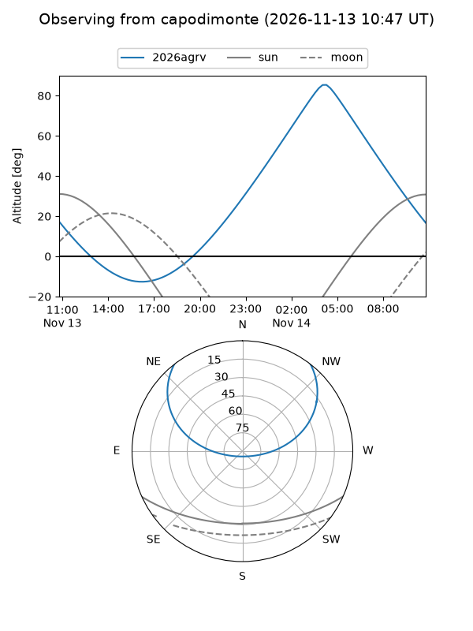
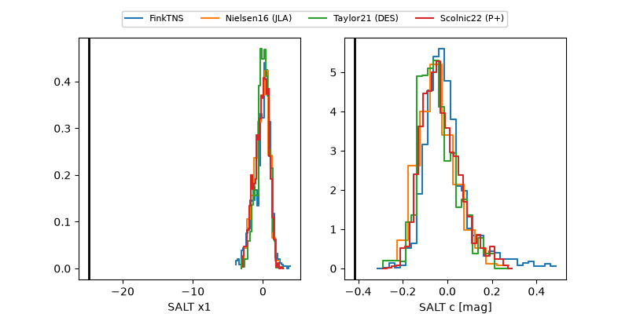

2026agrv
Target 2026agrv at 2026-11-11 03:51
Aliases and brokers:
FINK-ZTF: ztf.fink-portal.org/ZTF26accdute
Lasair-ZTF: lasair-ztf.lsst.ac.uk/objects/ZTF26accdute
ALeRCE-ZTF: alerce.online/object/ZTF26accdute
YSE-PZ: ziggy.ucolick.org/yse/transient_detail/2026agrv
TNS name: wis-tns.org/object/2026agrv
Direct TNS query: direct search
alt names
ZTF26accdute (ztf,fink_ztf)
2026agrv (tns,yse)
PS26kkm (panstarrs)
Coordinates:
equatorial (ra, dec) = 129.5732,+36.60954
equatorial (HMS+DMS) = 08:38:17.57,+36:36:34.36
galactic (l, b) = (185.8773,+36.37593)
Flags:
peak dt:
Photometry:
last atlaso=nan, ztfg=20.37, ztfr=19.82
1 atlaso, 2 ztfg, 4 ztfr detections
Lightcurve

Visibility



Additional plots
